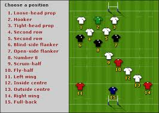

<!DOCTYPE html>
<html lang="hu">

<head>
    <meta charset="UTF-8">
    <meta name="viewport" content="width=device-width, initial-scale=1.0">
    <meta http-equiv="X-UA-Compatible" content="ie=edge">
    <title>Főoldal</title>

    <style>
        body {
            background-color: rgb(219, 205, 12);
        }

        h1 {
            color: white;
            text-align: center;
            font-family: 'Segoe UI', Tahoma, Geneva, Verdana, sans-serif;
            font-size: 70px;
        }

        h2 {
            color: white;
            text-align: relative;
            font-family: 'Segoe UI', Tahoma, Geneva, Verdana, sans-serif;
            font-size: 30px;
        }


        #fader {
            position: relative;
            width: 100%;
            height: 400px;
        }

        #celok {
            color: white;
        }
    </style>

    <script src="https://ajax.googleapis.com/ajax/libs/jquery/1.12.4/jquery.min.js"></script>

    <!--library-->
    <script src="projekt-1-het-weboldal.js "></script>
    <!--test-->

</head>

<body/>

<h1>A második sor</h1>

<h2>&quotMásodik sorosok&quot a nagyvilágban</h2>


<div id="fader">
    
    
    
    
    
</div>

<h2>Céljaink</h2>

<div id="celok">
    <ul>
        <li>könnyedén végigcsinálni ezt a négy hónapot</li>
        <li>egymásnak segíteni</li>
        <li>bevezetni a csütörtök esti sörözést-borozást</li>
        <li>mindeközben eleget aludni</li>

    </ul>

</div>

<h2>Munkáink</h2>

<h2>Hírek, aktualitások</h2>


</body>

</html>